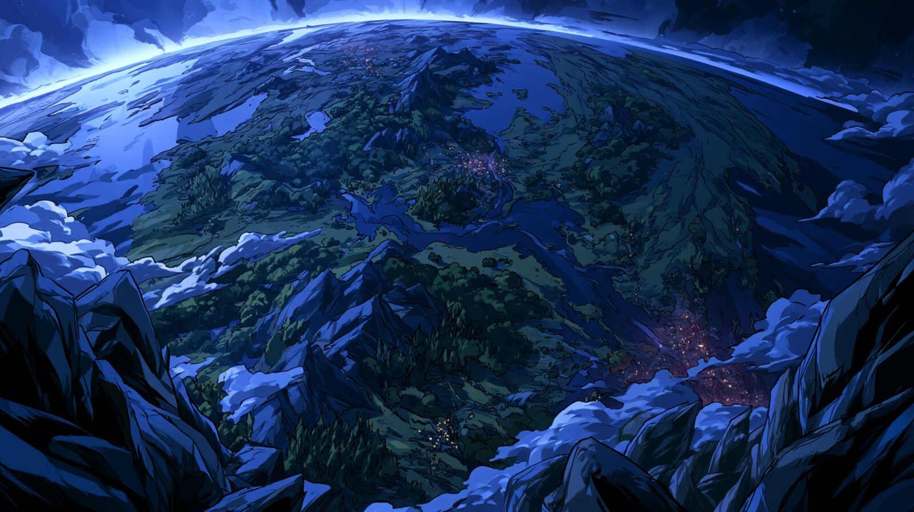
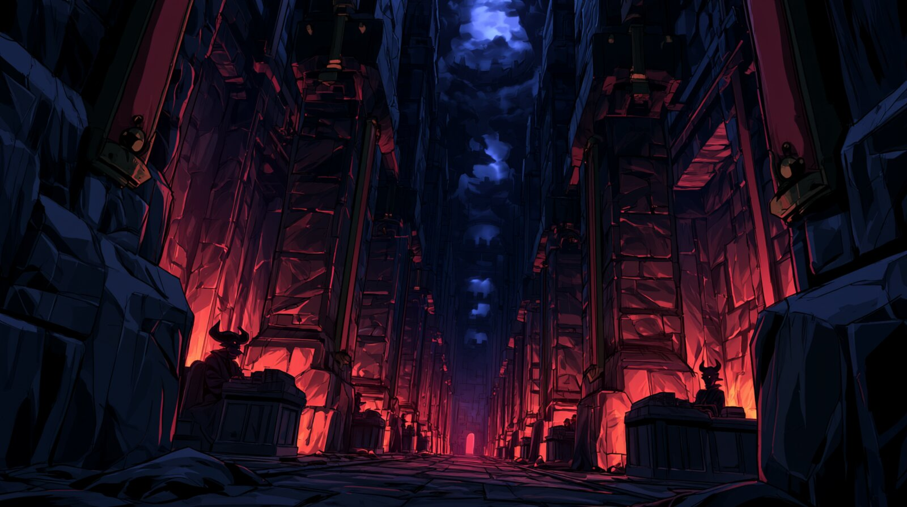
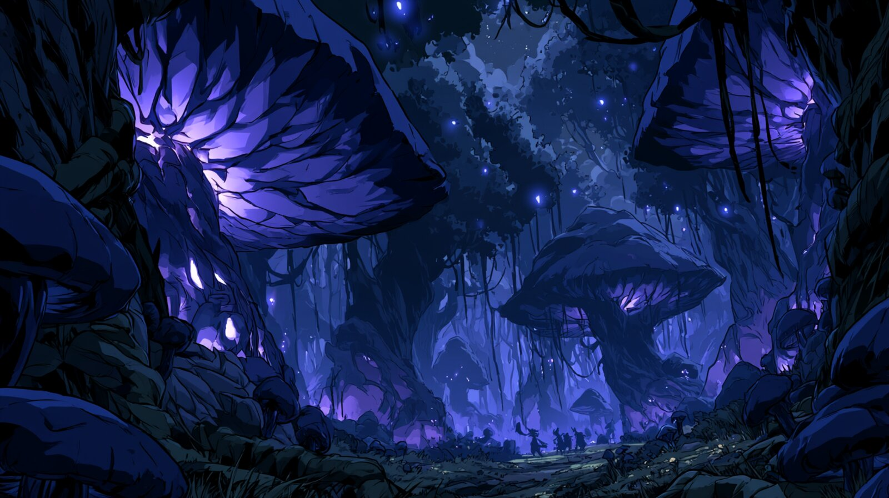
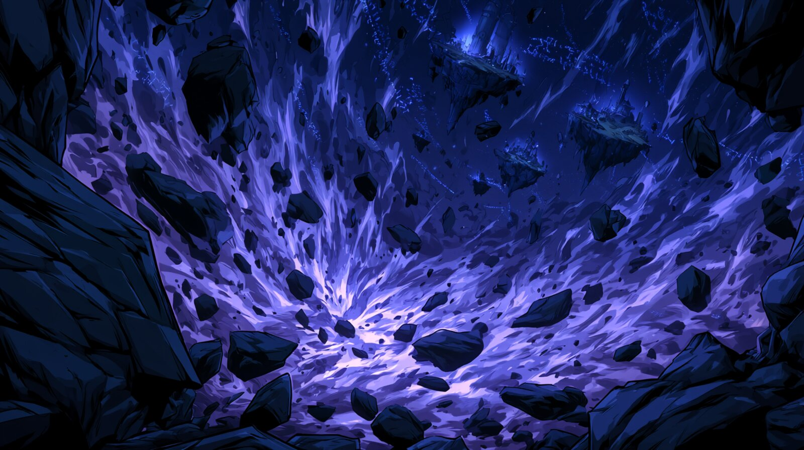
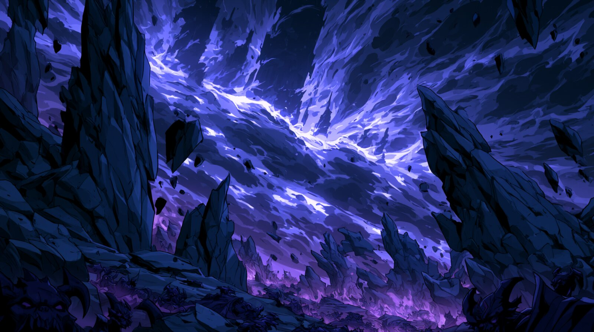

Пришлые из других земель маги порой приносят с собой рассказы о девяти кругах, бесчисленных Внешних Сферах и тысячах Домов — и каждый раз ошибаются. Академия Акриса давно установила это как факт: в Альраанир нет девяти кругов. Нет тысячи внешних сфер. Нет бесчисленных подпланов и забытых владений. Это не упрощённая доктрина для удобства смертных умов и не цензура знания ради безопасности рассудка — это просто то, как устроен этот конкретный мир. Слухи о большем числе планов родом из чужих земель или из старых, давно утративших силу книг — не более чем сказки, пересказывающие чужую космологию так, будто она наша.
Пять слоёв. Не девять кругов, не бесчисленные Внешние Сферы, не тысяча Домов — потому что их просто нет. Ровно пять слоёв бытия — не потому, что остальные скрыты или непостижимы для изучения, а потому что их никогда не существовало в этом мире. Альраанир прост не потому, что смертные его упростили для себя, а потому, что таким он был изначально.

Мир, в котором вы читаете эти строки — Альраанир со всеми его континентами, включая Лаернис, — единственный из пяти планов, где магия и материя существуют в честном равновесии. Здесь огонь обжигает одинаково что дварфа, что дракона, здесь время течёт в одну сторону и с одной скоростью для всех, и здесь — что важнее всего для остальных четырёх планов — рождаются существа, чья вера, воля или магическое мастерство однажды могут вознести их за пределы смертной природы.
Маги континента давно заметили: Материальный план — не просто «родной дом» в череде прочих. Он — единственный источник новых богов, единственное место, где Ад вербует души по контракту, и единственная твердь, к которой Мир Фей испытывает нечто похожее на извращённую тоску. Всё остальное сущее так или иначе вращается вокруг него, как мотыльки вокруг пламени, которое само не подозревает о собственной важности.

Легенды соседних земель любят пугать детей девятью кругами и бесконечными ярусами адских мук. Действительность куда скучнее — и от этого только страшнее. Ад Альраанир не имеет ярусов вовсе: это единственный, безразмерный слой бытия, устроенный, по свидетельствам немногих вернувшихся оттуда живыми, до отвращения похоже на огромную торговую контору или министерство, которое просто никогда не закрывается.
Дьяволы, населяющие Ад, — существа договороспособные почти до абсурда. У них есть чины, ранги, участки ответственности и внутренняя переписка (говорят, ходатайство о продлении контракта на душу может застрять в «адской бюрократии» на десятилетия земного времени — к неудовольствию обеих сторон). Мучение здесь — не искусство и не самоцель, а естественное следствие неисполненного или неверно прочитанного контракта. Дьявол скорее удивится, если вы заподозрите его в бессмысленной жестокости: жестокость без выгоды для дьявола так же нелепа, как убыточная сделка.
Именно поэтому маги континента, вопреки очевидной опасности, порой сознательно ищут контакта с Адом: с дьяволом, в отличие от демона Бездны, можно договориться — было бы что предложить, и достаточно ясно прописанный контракт.

Если Материальный план — трезвый, честный мир, то Мир Фей — его пьяный, смеющийся близнец, вывернутый наизнанку. Это не отдельная вселенная, а искажённое зеркальное отражение той же земли: та же река течёт там иначе, тот же лес растёт гуще и живее, а тени в нём падают порой не в ту сторону, куда светит их источник.
Населяют его феи, дриады, спригганы и десятки иных существ, для которых человеческие понятия правды, времени и обещания попросту не имеют смысла в привычном виде. Феи почти никогда не лгут напрямую — это ниже их достоинства. Вместо этого они играют словами так искусно, что самая честная фраза становится ловушкой для того, кто не уточнил формулировку. «Погости у нас одну ночь» может обернуться годом на Материальном плане — а может и наоборот, если гостя сочли скучным.
Путешественники, вернувшиеся оттуда, рассказывают о непреходящем ощущении, будто сам воздух там смеётся над тобой — не злобно, а с той же лёгкой, снисходительной иронией, с которой взрослый смотрит на всерьёз разгневанного ребёнка. Опаснее всего в Мире Фей не то, что там хотят причинить вред, а то, что там искренне не понимают, зачем смертным вообще так важны такие скучные вещи, как «постоянство» и «правда».

Между всеми прочими планами лежит Астрал — необъятное, почти бесконечное море чистой магической субстанции, серебристо-лавандовой, текучей, живой на ощупь. Именно здесь, а не в каком-то заранее уготованном «небесном царстве», оказываются смертные, однажды перешагнувшие порог обычного бытия через магию, веру миллионов или деяния, изменившие судьбу целых народов.
Боги Альраанир — не изначальные силы творения, а именно такие вознёсшиеся смертные. Оказавшись в Астрале, каждый из них по крупице выстраивает собственный маленький мир из окружающей магической субстанции — остров личной власти и веры, плавающий в бескрайнем океане возможного. Такие острова-миры нельзя увидеть с Материального плана напрямую, но их эхо чувствуют жрецы и паладины, чья вера черпает силу именно оттуда.
Помимо божественных владений, Астрал служит магам вполне практическим целям: это естественная среда для телепортации между дальними точками мира, для создания карманных измерений-хранилищ (архимаги континента годами копят в таких «карманах» целые библиотеки и арсеналы) и для дальних магических странствий. Расстояние здесь подчиняется не столько физическим законам, сколько воле и ясности намерения путешествующего — отчего опытный маг может пересечь Астрал за миг, а неопытный рискует блуждать в нём годами и столетиями, если вообще выберется.

Если Ад пугает своей холодной упорядоченностью, а Мир Фей — насмешливой чуждостью, то Бездна пугает попросту тем, что о ней почти нечего сказать наверняка. Здесь обитают демоны — в противоположность дисциплинированным дьяволам Ада, существа абсолютно недоговороспособные, лишённые какой-либо внутренней структуры или цели, кроме голода и разрушения ради самих себя.
Но демоны — даже не самое тревожное, что скрывает Бездна. Где-то в её беспредельных, текучих, лишённых формы и направления глубинах обитают древние боги — силы, существовавшие, по немногим уцелевшим записям, ещё до того, как первый смертный вознёсся в Астрал и создал первый пантеон. Их природа, цели и даже само их число неизвестны — архимаги, рискнувшие однажды заглянуть туда магическим взором, либо не возвращались вовсе, либо возвращались, отказываясь говорить о увиденном хоть слово.
Именно поэтому большинство трактатов, включая настоящий, ограничиваются одной фразой там, где о прочих планах можно писать главами: в Бездну не ходят, если могут этого избежать, а те немногие, кто вынужден был туда заглянуть, предпочитают эту главу своей жизни не пересказывать.
| План | Обитатели | Природа | Практическое значение для смертных |
|---|---|---|---|
| Материальный | Смертные народы Альраанир | Равновесие вещества и магии | Дом; единственный источник новых богов |
| Ад | Дьяволы | Единый безъярусный слой; строгая иерархия и контракты | Сделки — предсказуемые, но дорогие |
| Мир Фей | Феи и подобные существа | Искажённое зеркало мира; время и правда нелинейны | Опасные, но заманчивые странствия |
| Астрал | Вознёсшиеся боги-смертные | Бескрайный океан чистой магии | Телепортация, карманные хранилища, дальние странствия |
| Бездна | Демоны, древние боги | Хаос без формы, направления и структуры | Практически ничего — избегают все, кто может |
Настоящий свод составлен по сохранившимся спискам трактата «О пяти слоях сущего».
Всякое совпадение с иными космологиями следует считать случайным или ошибочным пересказом.